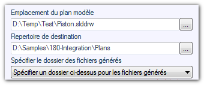
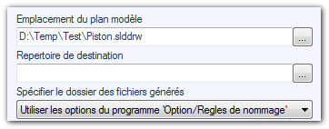
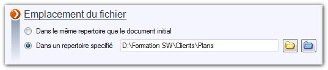

Opération possible sur les mises en plan. 
Cette opération permet de créer, par recopie d'un plan existant, les mises en plan de tous les fichiers sélectionnés par changement de références. La sauvegarde se fait dans un dossier spécifique.
Exemple :
Sauvegarder toutes les mises en plan sélectionnés prend comme modèle le fichier "Piston.slddrw".
Sélection 1 : "Spécifier un dossier ci-dessus pour les fichiers générés"

Les fichiers seront sauvegardés dans le répertoire "D:\Samples\180-Integration\Plans".
Dans ce cas on spécifie un dossier sans tenir compte des options de renommage.
Sélection 2 : "Utiliser les options du programme ‘Option/Règles de nommage"

Les plans seront sauvegardés dans le répertoire "D:\Formation SW\Clients\Plans" spécifié dans les règles de nommage.
Avec cette solution on ne spécifie pas de dossier d'export, l'emplacement sera défini dans les options de l'utilitaire (Règles de nommage), ainsi que les règles de nommage des fichiers.

 Le modèle peut être un plan standard (avec modèle représenté) ou un plan vide avec des vues prédéfinies.
Le modèle peut être un plan standard (avec modèle représenté) ou un plan vide avec des vues prédéfinies.